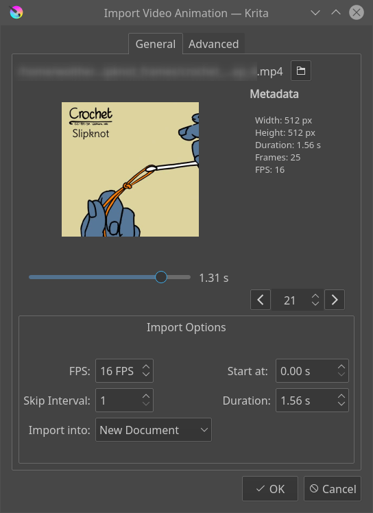

匯入動畫¶
Krita has several options for allowing you to import an animation.
匯入影格¶
Frame import will import a list of images into an animation layer. This is a format that most other animation software can export, and thus very useful for interchange.
First let us take a sprite sheet from Open Game Art. (This is the Libre Pixel Cup male walkcycle 1).
We'll use 分割影像 to split up the sprite sheet.
The slices are even, so for a sprite sheet of 9 sprites, use 8 vertical slices and 0 horizontal slices. Give it a proper name and save it as png.
Then, make a new canvas, and select . This will give you a little window. Select Add images. This should get you a file browser where you can select your images.
You can select multiple images at once.

The frames are currently automatically ordered. You can set the ordering with the top-left two drop-down boxes.
Press OK, and your animation should be imported as a new layer.

- Add images.
Add frames. You can select multiple frames in the file chooser.
- Remove.
Remove the selected frame
- Add hold frames automatically.
If a frame sequence has gaps, such as a sequence that has frames 1, 2 and 5, ticking this option will input empty frames at 3 and 4.
排序¶
- Ascending vs Descending
Whether it will import the frames in order from lowest to highest (ascending), or from highest to lowest (descending).
- Numerical vs Alphabetical
Whether it will use numbers or Alphabetical ordering for the frames.
時序¶
- Start at
The frame number to import at. Importing at 3 will have the resulting animation start at frame 3 within Krita.
- Step
The amount of frames to input for each imported frame. For importing a 6 fps animation into a 24 fps animation, you will need to set this to 24 / 6 = 4. This will ensure the playback speed stays the same.
- Source FPS
This displays what Krita thinks the fps of the input is with the current timing settings. You can use this to make sure that the input you made is correct with the FPS of your document.
匯入影片檔案¶
Video import allows you to import a sample of a video file as an animated paint layer.
- Choose a video file
This will bring up a file chooser for you to select the file in question.
- Preview
Gives a preview of the file to import.
- Slider
Allows you to scrub through the file in question.
- Frame Counter
Allows you to select the frame in question
- Frame Switcher
Two buttons to switch per frame.
影片檔案資訊¶
- Width
The width of the current file.
- Height
The height of the current file.
- Duration
The duration in seconds.
- Frames
The total amount of frames
- FPS
The frames per second.
- Color Primaries
The name of the color space primaries Krita has detected. These will be used for the color profile with which the file imports. Only shows up on files where this data is detected.
- Color Transfer
The name of the color space trc that Krita has found. This too will be used for the color profile. Only shows up on files where this data is detected.
匯入選項¶
- FPS
The FPS to import at. Importing 2 seconds of footage at 24 fps will import 48 frames, and at 60 fps, 120 frames will be imported.
- Skip Interval
Same as Step in the Import Frames section.
- Start at
Time code to start at.
- Duration
Length of the imported animation.
- Import into
Document to import the file into. Options are current document and new document. With new document, extra options become available on the second tab.
警告
Videos, because you usually only play them in a media player, are compressed in special ways. Because Krita is designed to allow you to draw each individual frame, this data gets uncompressed. What this means is that even though you can watch a video file on your computer, you likely cannot import all the frames into Krita. A warning will be displayed and inform you how many frames you can import with your current setup.
選項¶
Document Options¶
Only enabled when the import is into a new document.
- Width
Width of the new document.
- Height
Height of the new document.
Import Video Scale¶
- Width
The desired width in pixels
- Height
The desired height in pixels
- Filter
The filter to use for the resizing.
FFMpeg¶
- FFMpeg Path
Path to the ffmpeg executable, necessary for importing the video data.
- FFProbe path
Path to the ffmpeg probe executable, which is included with ffmpeg. This allows Krita to learn the video information from the file.